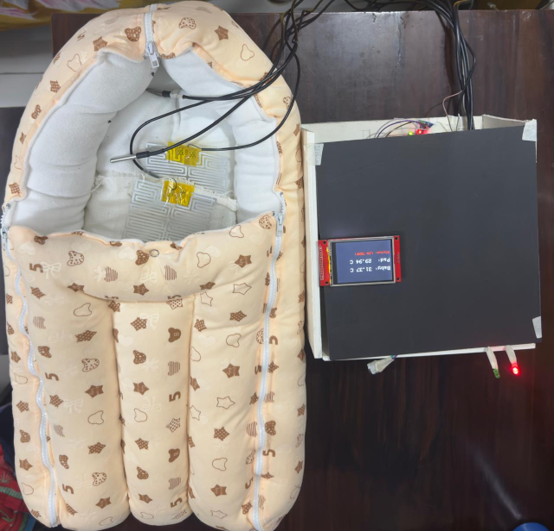

CapstoneApril 2025 – April 2026
NeoNest: smart infant thermal management system
A low-cost neonatal transport system that keeps infants at a safe body temperature and monitors them continuously, designed for resource-limited settings.
- Built an Arduino UNO prototype with DS18B20, MAX30102, MPU6050, OLED display and HC-05 Bluetooth for closed-loop thermal monitoring.
- Wrote safety alert logic and evaluated heating-pad thermal distribution with multi-sensor arrays and thermal imaging.